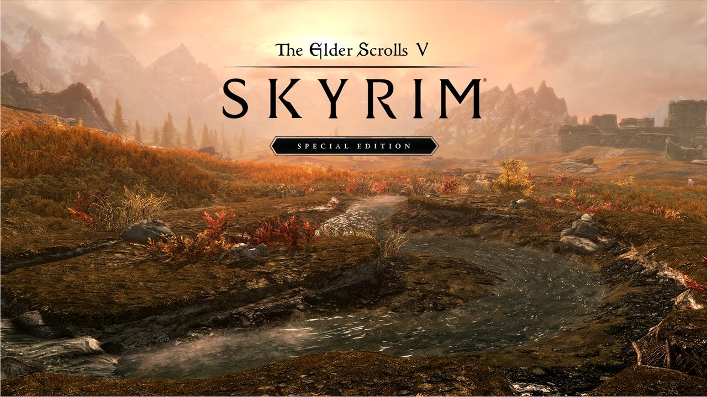

The Games
-
1. Skyrim: Special Edition
Why does it makes this list?
Although it was released almost a decade ago, the outstanding mod support for this game has allowed it to live a long life and provide thousands of hours of entertainment.
Buy it Here -
2. Metro Exodus
Why does it makes this list?
Not only should you play this entry in the series, but you should really play the entire series, starting with Metro: 2033. These games have incredible atmosphere, storylines, a ton of moral choices and satisfying gunplay.
Buy it here -
3. Warhammer Vermintide 2
Why does it makes this list?
This is a game that is super fun to play with friends. Multiple different characters and classes combined with a ton of different maps and enemy types keep this game fresh. Additionally, with multiple different difficulties and a huge skill level ceiling, there is always something to do.
Buy it here -
4. Total War: Warhammer 2
Why does it makes this list?
This is the latest fanatasy entry in a long standing series. While I do enjoy playing historical total war titles, this game brings so much variety to both units and factions, making no two playthroughs the same. Combine that with epic real time battle and an intriguing campaign mode and you'll be having loads of fun.
Buy it here -
5. Half Life Alyx

Why does it makes this list?
This game is special, and not just because it's a VR title. I have never been so immersed in a game world, everything can be interacted with and the visuals make it so you feel like you're in the real world. Not only that, but the story line, atmosphere and gunplay make this an incredible game. If it wasn't restricted to VR only, it would be my top choice.
Buy it here